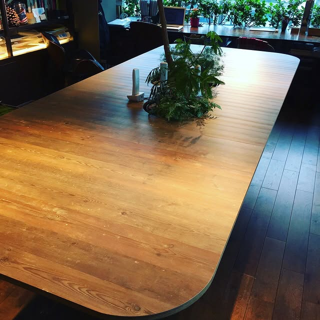
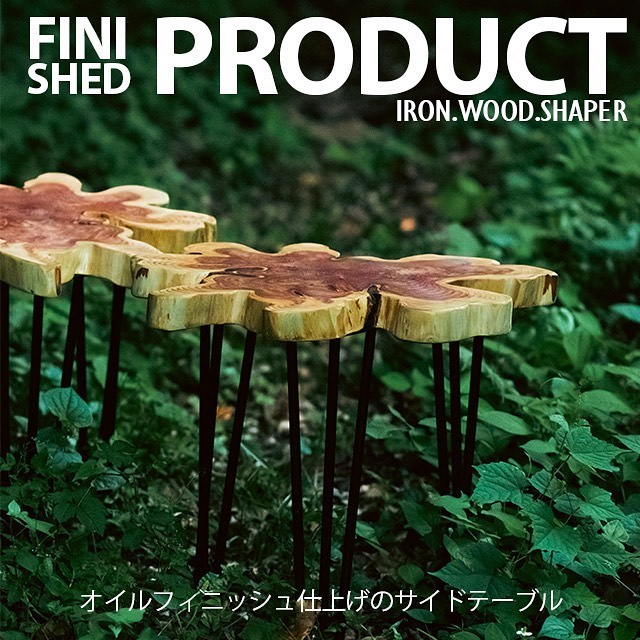
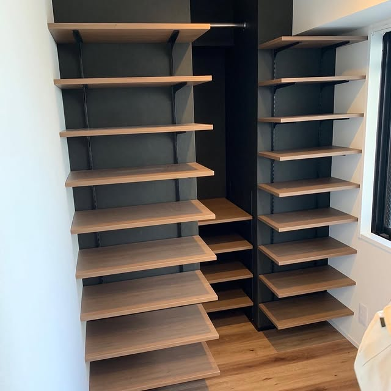
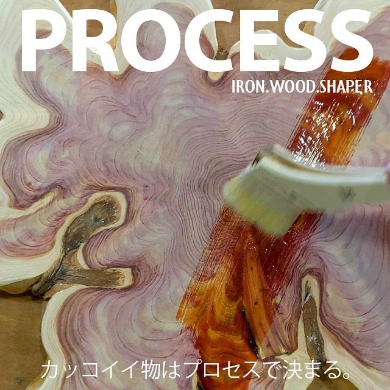
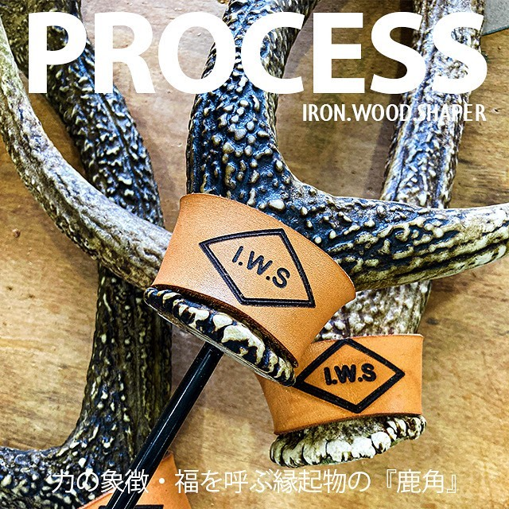

IRON.WOOD.SHAPER
Designed and Crafted in Japan.
01 / WORKS
One of a kind objects in wood and iron.





02 / ABOUT
Wood.
Iron.
Time.
Designed and Crafted in Japan.
素材の個性を見つめ、急がず、ひとつずつ形にする。
暮らしとともに深まる、一点物のクラフト。
03 / INSTAGRAM
@IRONWOODSHAPER ↗PHOTOGRAPHS FROM OFFICIAL INSTAGRAM
04 / CONTACT
CUSTOM WORK
空間や用途に合わせた一点物の制作について。